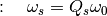
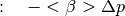
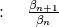
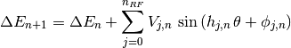
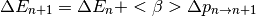

trackers package¶
Submodules¶
trackers.longitudinal_tracker module¶
Module containing all the elements to track the beam in the longitudinal plane.
| Authors: | Danilo Quartullo, Helga Timko, Adrian Oeftiger, Alexandre Lasheen |
|---|
- class trackers.longitudinal_tracker.LinearMap(GeneralParameters, Qs)¶
Bases: object
Linear Map represented by a Courant-Snyder transportation matrix. Qs is forced to be constant.
- Qs = None¶
Synchrotron tune (constant)
- beta_r = None¶
Copy of the relativistic beta (from GeneralParameters)
- eta = None¶
Copy of the 0th order slippage factor (from GeneralParameters)
- omega_0 = None¶
Copy of the revolution angular frequency (from GeneralParameters)
- omega_s = None¶
Synchrotron angular frequency in [rad/s] 
- ring_circumference = None¶
Copy of the ring circumference (from GeneralParameters)
- track(beam)¶
- class trackers.longitudinal_tracker.RingAndRFSection(RFSectionParameters, solver='full')¶
Bases: object
Definition of an RF station and part of the ring until the next station, see figure.

The time step is fixed to be one turn, but the tracking can consist of multiple RingAndRFSection objects. In this case, the user should make sure that the lengths of the stations sum up exactly to the circumference or use the FullRingAndRF object in order to let the code pre-process the parameters. Each RF station may contain several RF harmonic systems which are considered to be in the same location. First, a kick from the cavity voltage(s) is applied, then an accelerating kick in case the momentum program presents variations, and finally a drift kick between stations.
- acceleration_kick = None¶
Acceleration kick 
- alpha_order = None¶
Copy of the slippage factor order number (from RFSectionParameters)
- beta_av = None¶
Copy of the averaged relativistic beta (from RFSectionParameters)
- beta_r = None¶
Copy of the relativistic beta (from RFSectionParameters)
- beta_ratio = None¶
Beta ratio 
- counter = None¶
Copy of the counter (from RFSectionParameters)
- drift(beam)¶
The drift updates the longitudinal coordinate of the particle after applying the energy kick. The two options of tracking are: full, corresponding to the cases where beta the slippage factor may be of higher orders; and simple, where the slippage factor is of order 0 (the code is then faster).
Corresponding to the equations:


- energy = None¶
Copy of the relativistic energy (from RFSectionParameters)
- eta_0 = None¶
Slippage factor (order 0) for the given RF section
- eta_1 = None¶
Slippage factor (order 1) for the given RF section
- eta_2 = None¶
Slippage factor (order 2) for the given RF section
- gamma_r = None¶
Copy of the relativistic gamma (from RFSectionParameters)
- harmonic = None¶
Copy of harmonic number program (from RFSectionParameters)
- kick(beam)¶
The Kick represents the kick(s) by an RF station at a certain position of the ring. The kicks are summed over the different harmonic RF systems in the station. The cavity phase can be shifted by the user via phi_offset. The increment in energy is given by the discrete equation of motion:

- kick_acceleration(beam)¶
KickAcceleration gives a single accelerating kick to the bunch. The accelerating kick is defined by the change in the design momentum (synchronous momentum). The acceleration is assumed to be distributed over the length of the RF station, so the average beta is used in the calculation of the kick. An extra increment in the equation of motion with respect to the Kick object is given by:

- length_ratio = None¶
Copy of length ratio (from RFSectionParameters)
- momentum = None¶
Copy of the momentum program in [eV/c] (from RFSectionParameters)
- n_rf = None¶
Copy of the number of RF systems (from RFSectionParameters)
- p_increment = None¶
Copy of the momentum increment in [eV/c] (from RFSectionParameters)
- phi_offset = None¶
Copy of phi_offset program in [rad] (from RFSectionParameters)
- phi_s = None¶
Copy of phi_s program in [rad] (from RFSectionParameters)
- section_length = None¶
Copy of length (from RFSectionParameters)
- solver = None¶
- Choice of solver for the driftSet to ‘simple’ if only 0th order of slippage factor etaSet to ‘full’ if higher orders of slippage factor eta
- track(beam)¶
- Tracking method for the section, applies the equations in this order:kick -> kick_acceleration -> driftUpdates the relativistic information of the beam.
- voltage = None¶
Copy of voltage program in [V] (from RFSectionParameters)
trackers.longitudinal_utilities module¶
Utilities to calculate Hamiltonian, separatrix, total voltage for the full ring.
| Authors: | Danilo Quartullo, Helga Timko, Alexandre Lasheen |
|---|
- trackers.longitudinal_utilities.hamiltonian(GeneralParameters, RFSectionParameters, theta, dE, delta, total_voltage=None)¶
Single RF sinusoidal Hamiltonian. For the time being, for single RF section only or from total voltage. Uses beta, energy averaged over the turn. To be generalized.
- trackers.longitudinal_utilities.is_in_separatrix(GeneralParameters, RFSectionParameters, theta, dE, delta, total_voltage=None)¶
Condition for being inside the separatrix. For the time being, for single RF section only or from total voltage. Single RF sinusoidal. Uses beta, energy averaged over the turn. To be generalized.
- trackers.longitudinal_utilities.separatrix(GeneralParameters, RFSectionParameters, theta, total_voltage=None)¶
Single RF sinusoidal separatrix. For the time being, for single RF section only or from total voltage. Uses beta, energy averaged over the turn. To be generalized.
- trackers.longitudinal_utilities.total_voltage(RFsection_list, harmonic='first')¶
Total voltage from all the RF stations and systems in the ring. To be generalized.